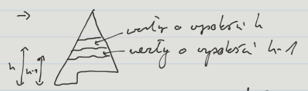

Będąc w jakimś węźle, potrzebne są wskaźniki umożliwiające nam przejście do parent-a tego węzła oraz lewego i prawego potomka. Warto zauważyć, że mamy do czynienia z pełnym drzewem binarnym, przez co mamy pewność, że na kolejnym poziomie mamy zawsze dwa razy więcej elementów niż na poprzednim (poza ostatnim poziomem).
Wówczas, możemy używać następujących prostych makr:
parent(i)=⌊2i⌋left(i)=2⋅iright(i)=2⋅i+1
Powyższe makra są bardzo szybkie, bo możemy użyć prostych operacji na bitach.
Nie potrzebujemy już budować struktur węzłów, tak jak miało to w przypadku BST i pochodnych — wystarczą nam tablica wraz z powyższymi makrami.
Def wysokość węzła
Wysokością węzła nazywamy liczbę krawędzi na najdłuższej prostej ścieżce prowadzącej od tego węzła do liścia.
Heapify(A,i)
Procedura przywracająca własność kopca dla węzła o indeksie i w tablicy A. Zakładamy, że kopce ukorzenione w lewym i prawym potomku węzła i zachowuję własność kopca.
Heapify(A,i): 1. Sprawdź czy left(i) lub right(i) nie są większe niż rozmiar kopca 2. x= wybierz ze zbioru {i,left(i),right(i)} indeks węzła, dla którego będzie zachowana własność kopca pomiędzy elementami {A[i],A[left(i)],A[right(i)]} 3. ifx=i: 1. swap(A[i],A[x]) 2. Heapify(A,x)
heapify example
BuildHeap(A)
n=length(A)
fori←⌊2n⌋to1
Heapify(A,i)
i←i−1
BuildHeap example
Złożoność obliczeniowa BuildHeap
Grube oszacowanie: 2n razy wykonujemy operację Heapify o złożoności O(logn) czyli mamy O(nlogn).
Fakt #1
W n-elementowym kopcu binarnym występuje co najwyżej ⌈2h+1n⌉ węzłów o wysokości h.
D-d Faktu #1
Indukcja po h
Dla h=0: ⌈2n⌉ liści — O.K.
Zał. indukcyjne ∀k<h występuje co najwyżej ⌈2k+1n⌉ węzłów o wysokości k
Krok indukcyjny:
z zał. ind. na wysokości h−1 mamy ≤⌈2k−1+1n⌉=⌈2kn⌉ węzłów
d-d fakt 1 1
Zatem węzłów o wysokości h jest co najwyżej 21⋅⌈2kn⌉≤⌈2h+1n⌉.
■
Złożoność obliczeniowa BuildHeap c.d.
h=0∑lgn⌈2h+1n⌉⋅O(h)=O⎝⎜⎜⎜⎜⎜⎛n⋅ograniczone przez stałąh=0∑lgn2hh⎠⎟⎟⎟⎟⎟⎞=O(n)
Dla ∣x∣<1: k≥0∑xk=1−x1/()′/⋅xk≤0∑k⋅xk=(1−x)2x
Zatem dla x=21: k≤0∑2kk=(1−21)221=2.
Kopiec d-arny
Kopiec binarny w łatwy sposób uogólnia się na kopiec d-arny, czyli taki, w którym węzły nie będące liśćmi mają po d potomków.
Jednym z zastosowań kopców jest sortowanie przez kopcowanie HeapSort(A). Wykorzystuje się do tego kopiec maksymalny (w kopcu maksymalnym własność kopca to: A[parent(i)]≥A[i]). Najpierw budujemy kopiec, a potem ściągamy z niego korzeń, po czym przywracamy własność kopca dla pozostałych elementów.
Dla tablicy A wielkości n wywołanie BuildHeap ma złożoność O(n). Każde z n−1 wywołań Heapify ma pesymistyczną złożoność O(logn). Zatem w sumie złożoność wynosi: O(n)+(n−1)⋅O(logn)=O(nlogn)